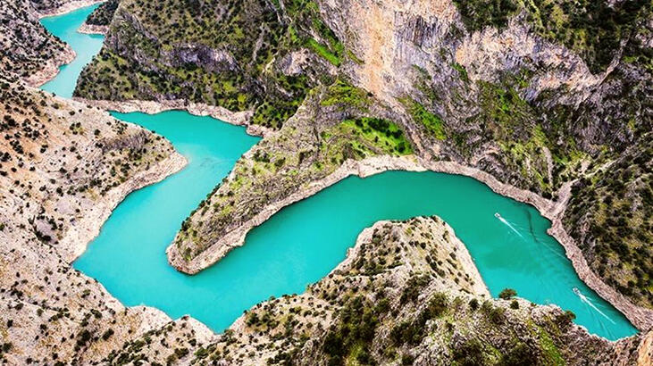
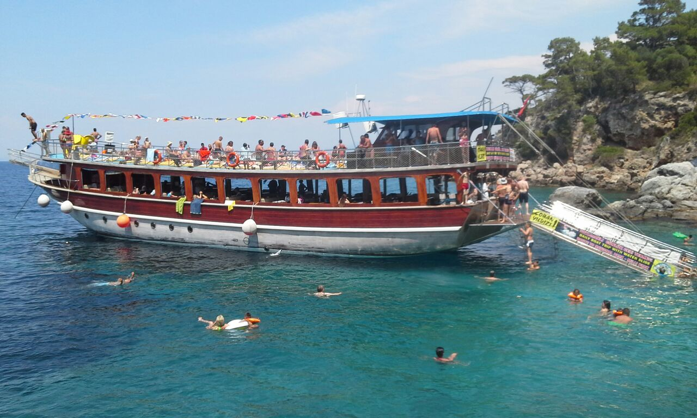
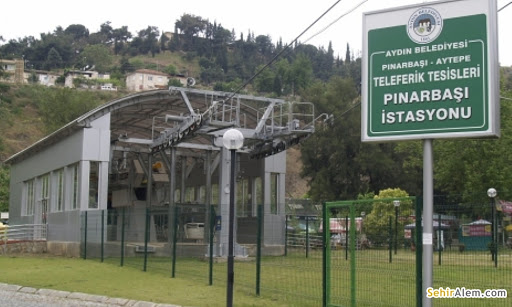
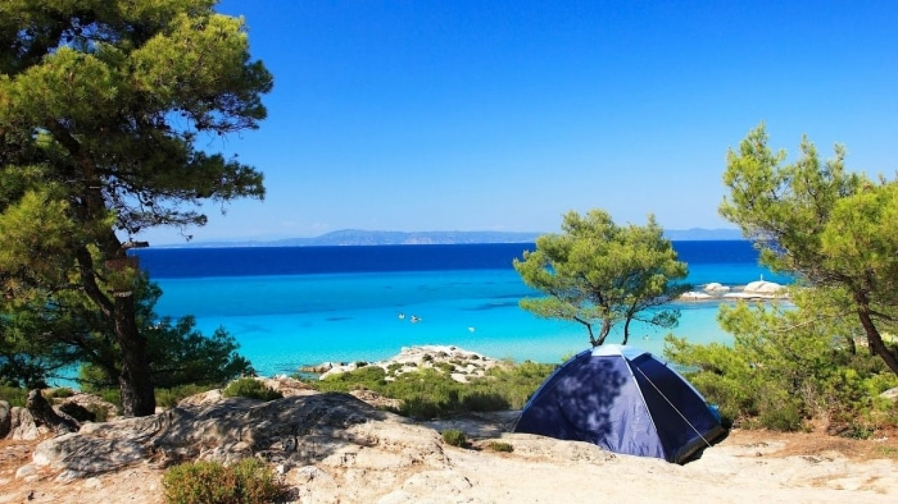
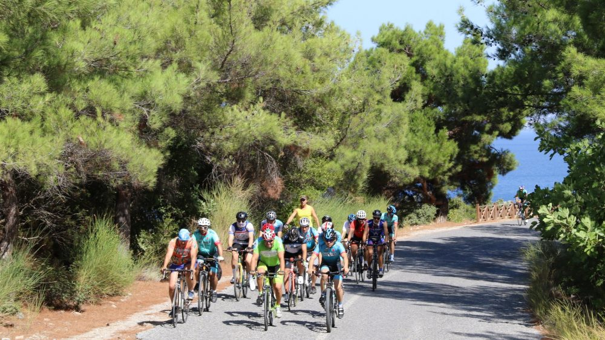
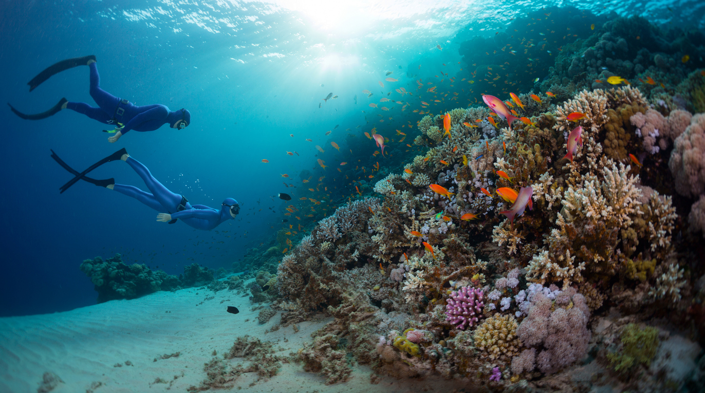
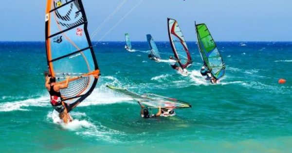

Ege Bölgesi'nin popüler turizm kenti Aydın'da hem tarihi hem de doğal güzelliklerini gezdikten
sonra spor alanında faaliyetler yapmalısınız. Aydın bulunduğu konum itibari ile farklı su sporu etkinliklerine olanak tanır.
Aydın'a tatil için geldiğiniz zaman adrenalin dolu anlar yaşayabileceğiniz aktiviteler de bulunmaktadır.
1.Arapapıştı Kanyonu'nda Gezmek

Nisan ve Mayıs aylarında suyun artması ile birlikte dağların arasından akan masmavi suyun üzerinde tekne turlarına katılabilirsiniz.
Dağların arasındaki suyun mükemmel görünümü tatilcilere Norveç'in tekne turu manzaralarını anımsatır.
2.Kuşadası'nda Tekne Turu

Kuşadası ilçesinin Marina ve Güvercinada iskelesinden hareket eden tekneler sabahtan akşama kadar süren doyumsuz bir eğlence fırsatıdır.
Kuşadası çevresinde bulunan el değmemiş koyları görebileceğiniz ve tur sahiplerinin uygun gördüğü bu koylarda yüzebilme imkanı yanı sıra sabahtan akşama kadar müzik eşliğinde eğlenebilirsiniz.
3.Pınarbaşı'ndan Aytepe'ye Kadar Teleferik

Aydın Belediyesi tarafından inşa ettirilen teleferik hattı şehir merkezinde bulunan Pınarbaşı'ndan Aytepe'ye kadar uzanır.
536 metre uzunluğunda, 6 adet kabini bulunan teleferiğin bir kabini içerisine yaklaşık 6 kişi binebilir.
Aytepe Mesire Alanı'na ulaşabilmek için beş yüz basamak çıkmak yerine hem teleferik hattını kullanın hem de mükemmel manzarasını seyredin.
4.Didim Tekne Turu

Aydın'a bağlı Didim ilçesinin Altınkum ve Akbük sahilinden hareket eden tekne turları yaz döneminin vazgeçilmezidir.
Didim ilçesinin çevresinde bulunan mükemmel manzaralara şahit olabileceğiniz koylara giden bu tekne turlarında sabahtan akşama kadar müzik,
açık büfe içecek ve yemek servisleri bulunmaktadır.
Cennet Adası, Akvaryum, Polis Akademisi ve Dalyanaki gibi koylara ulaşan bu tekne turlarına kesinlikle bir defa katılmalısınız.
5.Popüler Festivaller

Kuşadası Gençlik Festivali, Umurlu Erik Festivali ve Altınkum Plaj Festivali Aydın'ın popüler festivallerinden birkaçıdır.
6.Doğa İle İç İçe Kamp Alanları

Aydın şehir merkezinde çadır kurabileceğiniz noktalar yok denecek kadar azdır. Denizin kıyı kesimlerine doğru açıldığınız zaman çadır
kurabileceğiniz alternatif seçenekler bulunur.
Aydın'ın Kuşadası ilçesinde Kadınlar Denizi ve Sevgi Plajı çevresinde ücretsiz çadır kurabileceğiniz alanlar vardır. Bu alanlarda çadır kurmanıza
rağmen gerekli mercilere çadır kurduğunuza dair bilgi aktarmalısınız.
Kuşadası ilçesinde bulunan Önder ve Kuşadası Camping şirketlerinin belirlediği alanlarda ücretli bir şekilde çadır kurabilirsiniz. Duş, lavabo,
giyinme ve soyunma kabinleri gibi ihtiyaçlarınızı işletmeciler karşılamaktadır.
Aydın'ın Didim ilçesinde sahil kenarında görevlilere bildirdikten sonra ücretsiz çadır kurabilirsiniz. Sahil kenarında
kuracağınız çadır için bütün ihtiyaçlarınızı yanınızda getirmelisiniz.
İster kendiniz çadırınızı getirin isterseniz camping şirketlerinden çadır temin edebileceğiniz işletmeler bulunmaktadır.
7.Didim Jeep Safarisi

En az 4 en fazla 7 kişinin katılabileceği bu turun Mavişehir, Akbük, Kazıklı ve Bozbük koylarını kapsayan güzergahında safari yapabilirsiniz.
8.Şehir Merkezinden Bisiklet Turları

Kültür ve Turizm Bakanlığı önderliğinde oluşturulan bisiklet turu rotalarına tatilciler de katılabilir.
Dilek Yarımadası Büyük Menderes Deltası Milli Park’ında dağ bisikleti için bisiklet parkurları bulunurken şehir merkezinden
hareket ederek yol yapabileceğiniz ve farklı ilçelere ulaşabileceğiniz bisiklet güzergahları vardır.
Bakanlık önderliğinde Aydın şehir merkezinden Kuşadası ilçesinin Güzelçamlı Mevkii'ne kadar gidebileceğiniz bisiklet rotası oluşturulmuştur.
Şehir merkezinden kiralayabileceğiniz bisikletler ile bu turlara katılım sağlayabilirsiniz.
Dağ ve uzun yol için tercih edeceğiniz bisikletlerin bakımları tam olmalı ve yanınızda yedek parçalar ile yola çıkmalısınız.
9.Kuşadası Jeep Safarisi

Sabah saat 09:30 sularında başlayan akşam üzeri saat 16:00 gibi bitirilen bu tura katılmak için önceden rezervasyon yaptırmalısınız.
Safari turunda Sultaniye Köyü, Yeni Köy, Burgaz Köyü, Gümüş Dağı ve Pamucak Plajı güzergahı kullanılmaktadır.
Safari turunu düzenleyen şirketler sizin belirttiğiniz noktadan sizi alır ve tur sonrasında sizi aldığı noktaya geri bırakır.
10.Suya Dalış Kursları

Ege Denizi kıyı kesimlerinde bulunan Aydın'a bağlı Kuşadası ve Didim ilçelerinde hiçbir dalış bilginiz olmadan
dalış eğitmenleri eşliğinde dalış yapabilirsiniz.
Dalış konusunda endişeleri bulunan tatilcilere ihtiyaç duyacağı önemli noktalar anlatıldıktan sonra eğitmen eşliğinde dalış yapar.
Profesyonel dalış sertifikası bulunan tatilciler ise tur şirketi aracılığıyla dalış yapılacak bölgeye kadar
götürüldükten sonra bilmesi gerekenler anlatıldıktan sonra tur ile birlikte dalış yapabilir.
Kuşadası ilçesinde bulunan tatilciler Marina bölgesinde yer alan tur şirketleri ile dalış için anlaşabilir.
Didim ilçesinde bulunan tatilciler ise Altınkum'un 3. koyunda yer alan tur şirketleri ile konuşmalıdır.
11.Rüzgar Sörfü

Ege Bölgesi'nde rüzgâr sörfünün en fazla tercih edildiği ilçelerden birisi Didim'dir. Didim'in Altınkum
Plajı'nın 2. koyunda rüzgâr sörfü yapmanıza olanak sağlayan şirketler bulunmaktadır.
Hem rüzgâr sörfü eğitimi hem de rüzgar sörfü kiralayabileceğiniz bu işletmeciler her şey dahil fiyatlar belirlemektedir.
İşletmeciler tarafından verilen sertifikalı 1, 3 ve 6 saatlik eğitimler sayesinde rüzgar sörfünü öğrenebilirsiniz.
Eğitimleri bitirdiğiniz zaman işletmecilerden rüzgar sörfü kiralayabilirsiniz.